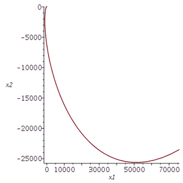
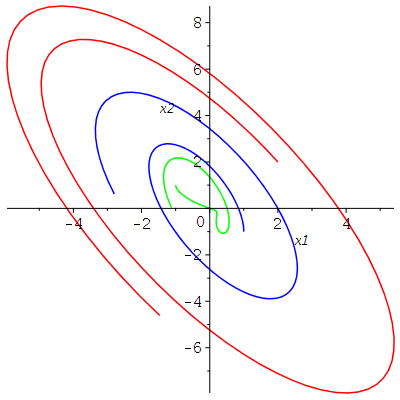
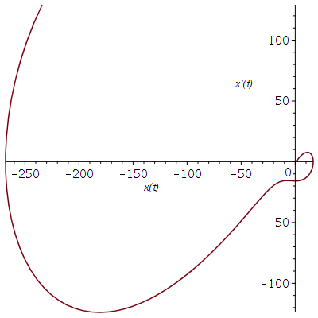
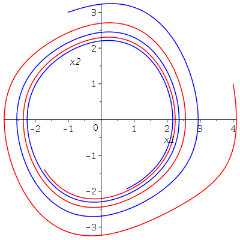
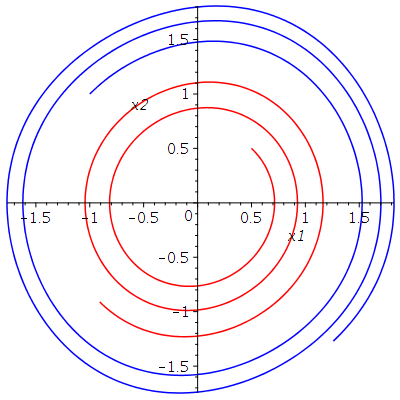
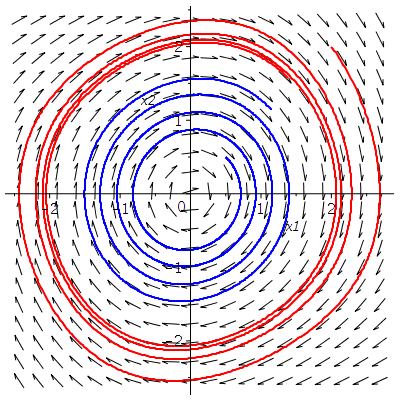
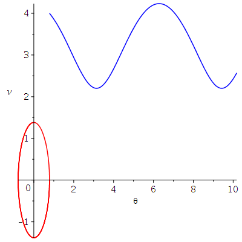
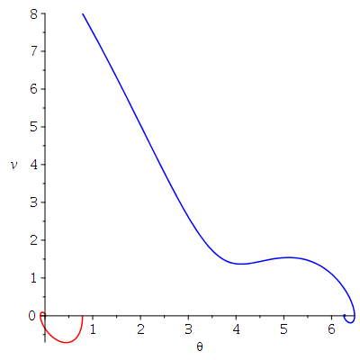

Systems of ODE
General Concepts
Consider the system of ODE \(X'(t) = f(t,X(t))\) where \(\displaystyle f:\mathbb{R} \times \mathbb{R}^n \to \mathbb{R}^n\). Our goal is to find a solution of this system of ODE satisfying a given initial condition: namely, to find a differentiable function \(\displaystyle X:I \to \mathbb{R}^n\) defined on an open interval \(I \subset \mathbb{R}\) containing the origin and such that \(X\) satisfies this system of ODE with a given initial condition \(X(0) = X_0\). The theory says that there always exists a unique solution if \(f\) is continuous and locally Lipshitz with respect to the variable \(X\). If \(f\) does not depend of the time \(t\), then we say that the system of ODE is autonomous. In this case, if \(X\) is a solution of the system of ODE, then \(f(X(t))\) is the direction and velocity of \(X\) at time \(t\). In particular, \(f(X(t))\) is tangent to the orbit \(\{ X(t): t \in I\}\) at time \(t\).
For autonomous systems of two ODE, it is traditional to draw the vector field associated to the system of ODE to get a qualitative picture of the global behaviour of the orbits of this system. For many (equally spaced) points \(X\) in the plane, we draw from each of these points \(X\) a vector in the direction \(f(X)\). Sometimes the length of the vector drawn is proportional to the norm of \(f(X)\).
A system of ODE of the form \(X'(t) = A X(t)\), where \(A\) is a constant \(n \times n\) matrix, is called a (homogeneous) linear system of ODE. The theoretical solution of this system is \(\displaystyle X(t) = e^{t A} X(0)\), where the exponential of a square matrix \(B\) is defined by the series \(\displaystyle e^B = \sum_{n=0}^\infty \frac{1}{n!} B^n\). This series always converges. The notion of convergence for series of matrices is independent of the induced norm of matrices chosen. Consider the matrix defined by the following command in Maple.
> with(LinearAlgebra): A := Matrix([[2,-1],[1,2]]);\[ A := \begin{bmatrix} 2 & -1 \\ 1 & 2 \end{bmatrix} \]
The exponential of this matrix is given by the following command.
> expA := MatrixExponential(A);\[ expA := \begin{bmatrix} e^2 \cos(1) & -e^2 \sin(1) \\ e^2 \sin(1) & e^2 \cos(1) \end{bmatrix} \]
Moreover, \(\displaystyle e^{tA}\) is given by the following command.
> exptA := MatrixExponential(A,t);\[ exptA := \begin{bmatrix} e^{2t} \cos(t) & -e^{2t} \sin(t) \\ e^{2t} \sin(t) & e^{2t} \cos(t) \end{bmatrix} \]
We can use dsolve() to solve the system of homogeneous linear system of ODE \(X'(t) = A X(t)\).
> eq1 := {diff(x1(t),t) = 2*x1(t) - x2(t), diff(x2(t),t) = x1(t) + 2*x2(t)};
\[
eq1 := \left\{ \frac{\text{d}}{\text{d}t} x1(1) = 2 x1(1) - x2(t) , \frac{\text{d}}{\text{d}t} x2(t) = x1(t) + 2 x2(t) \right\}
\]
> X := dsolve(eq1, {x1(t), x2(t)});
\[
X := \left\{ x1(t) = e^{2t} (\_C2 \cos(t) + \_C1 \sin(t), x2(t) = -e^{2t} ( \cos(t)\_C1 - \sin(t) \_C2 \right\}
\]
where _C1 and _C2 are arbitrary constants. This expression is equal to \(\displaystyle e^{tA} \begin{bmatrix} \_C2 \\ -\_C1 \end{bmatrix}\). We can also solve \(X'(t) = A X(t)\) with the initial condition \(\displaystyle X(0) = \begin{bmatrix} 2 \\ 3 \end{bmatrix}\).
> eq2 := eq1 union {x1(0)=2,x2(0)=3};
\[
eq2 := \left\{ \frac{\text{d}}{\text{d}t} x1(1) = 2 x1(1) - x2(t) , \frac{\text{d}}{\text{d}t} x2(t) = x1(t) + 2 x2(t) , x1(0) = 2, x2(0) = 3\right\}
\]
The solution of this system is given by the following command.
> X := dsolve(eq2,{x1(t),x2(t)});
\[
X := \left\{ x1(t) = e^{2t} (2 \cos(t) - 3 \sin(t) ), x2(t) = -e^{2t} ( -3 \cos(t) - 2 \sin(t) )\right\}
\]
It is the case with _C1 = -3 and _C2 = 2 in the general solution above.
We can use Maple to draw the orbit of this solution.
> X1:=subs(X,x1(t)); X2:=subs(X,x2(t)); plot([X1,X2,t=-1..5],axes=FRAME,labels=['x1','x2']);\[ \begin{split} & x1(t) = e^{2t} (2 \cos(t) - 3 \sin(t) ) \\ & x2(t) = -e^{2t} ( -3 \cos(t) - 2 \sin(t) ) \end{split} \]

Homogeneous Linear Systems of ODE
To evaluate the solution of an homogeneous linear system of ODE at
various values of the independent variable \(t\), we have to evaluate
\(\displaystyle e^{tA} X_0\) at several values of \(t\). In general,
it is difficult and time consuming to compute the exponential
\(\displaystyle e^{tA}\) when the dimensions of the square matrix \(A\)
are large. There are however some nice results from linear algebra
that help us (and the software) to compute this exponential. For
instance, it is possible to write \(A\) as \(A = U D V\)
where \(D\) is a block diagonal matrix (e.g. a Jordan normal form or a real
canonical form), and \(U\) and \(V\) are invertible matrices. We then
have that \(\displaystyle e^{tA} = U e^{tD} V\) where
\(\displaystyle e^{tD}\) is much easier and faster to
compute than \(\displaystyle e^{tA}\) because \(D\) has zero
components off the (block) diagonal (at lot of zero components). It is
easy
to multiply matrices with a lot of zero
components at known locations.
We will not consider the general theory of matrix decomposition in this document. We will consider only \(2 \times 2\) matrices. In this case, there could be:
- one or two real eigenvalues with two linearly independent real eigenvectors associates to them,
- one real eigenvalue only with only one linearly independent real eigenvector (up to a scalar multiple) associated to it, or
- two complex (i.e. non-zero imaginary part) conjugated eigenvalues with two linearly independent complex eigenvectors associates to them.
Two Linearly Independent Real Eigenvectors
Consider the linear system of ODE defined in Maple
> eq3 := {diff(x1(t),t)=-4*x1(t)+ 2*x2(t), diff(x2(t),t)=-1*x1(t)-x2(t)};
\[
eq3 := \left\{ \frac{\text{d}}{\text{d}t} x1(t) = 4\; x1(t) + 2\; x2(t) ,
\frac{\text{d}}{\text{d}t} x2(t) = - x1(t) - x2(t) \right\}
\]
The matrix of coefficients of this linear system of ODE is given below.
> A := Matrix([[-4,2],[-1,-1]]);\[ A := \begin{bmatrix}-4 & 2 \\ -1 & -1 \end{bmatrix} \]
The eigenvalues and eigenvectors of A are given by the following commands.
> with(LinearAlgebra): Eigenvectors(A);\[ \begin{bmatrix}-3 \\ -2 \end{bmatrix}, \begin{bmatrix} 2 & 1 \\ 1 & 1 \end{bmatrix} \]
We have two eigenvalues \(-3\) and \(-2\). An eigenvector associated to the eigenvalue \(-3\) is given by the first column of the \(2\times 2\) matrix and an eigenvector associate to the eigenvalue \(-2\) is given by the second column. This \(2\times 2\) matrix can be selected as the matrix \(U\) in the decomposition of \(A\) presented in the introduction of this section. We use dsolve() to solve this linear system of ODE. We are mainly interested in the qualitative aspect of the solutions. So, we draw the vector field associated to this system.
> with(DEtools): DEplot(eq3,[x1(t),x2(t)],t=0..5, [[x1(0)=0.5,x2(0)=0], [x1(0)=-0.5,x2(0)=-0.1]], linecolor=[blue,red], thickness=1,color=green, arrows=small,stepsize=0.01);

We have also drawn two orbits associated to the solutions with initial condition \(\displaystyle \begin{bmatrix}0.5 \\ 0 \end{bmatrix}\) (in blue) and \(\displaystyle \begin{bmatrix} -0.5 \\ 0 \end{bmatrix}\) (in red). As can be seen from the vector field, all the solutions converge toward the origin as \( t \to \infty\). This is typical of linear system of ODE with two negative eigenvalues. The origin is called a sink or stable node. If the two eigenvalues had been positive, we would have observed that all solutions go away from the origin as \(t \to \infty\). The origin is then called a source or unstable node.
Note: Another way to draw the vector field is with the function dfieldplot().
> dfieldplot(eq3,[x1(t),x2(t)],t=-2..2,x1=-1..1,x2=-1..1):
We leave to the reader the pleasure of trying this command. We also leave to the reader the pleasure of discovering the qualitative behaviour of the orbits of the linear system of ODE when one of the eigenvalues is positive and the other is negative. The origin is then called a saddle point.
Only One Linearly Independent Eigenvector (up to a scalar multiple)
We must have a real eigenvalue of algebraic multiplicity two and geometric multiplicity one. Consider the homogeneous linear system of ODE defined by the following Maple command.
> eq4:={diff(x1(t),t)=3*x1(t)+x2(t), diff(x2(t),t)=3*x2(t)};
\[
eq4 := \left\{ \frac{\text{d}}{\text{d}t} x1(t) = 3\; x1(t) + x2(t) ,
\frac{\text{d}}{\text{d}t} x2(t) = 3\; x2(t) \right\}
\]
The matrix of coefficients of this linear system of ODE is given below.
> A := Matrix([[3,1],[0,3]]);\[ A := \begin{bmatrix}-4 & 2 \\ -1 & -1 \end{bmatrix} \]
The eigenvalues and eigenvectors of the matrix A are given by the following command.
> Eigenvectors(A);\[ \begin{bmatrix} 3 \\ 3 \end{bmatrix}, \begin{bmatrix} 1 & 0 \\ 0 & 0 \end{bmatrix} \]
There is only one eigenvalue (i.e. \(3\)) of algebraic multiplicity two and geometric multiplicity one. To get a qualitative picture of the global behaviour of the orbits of this linear system of ODE, we draw in the same figure its vector field and the orbits of some particular solutions.
> DEplot(eq4,[x1(t),x2(t)],t=-1..1,[[x1(0)=2,x2(0)=-3],[x1(0)=-2,x2(0)=2]], linecolor=[blue,green],thickness=1,stepsize=0.01);

As can be seen from the vector field, all the solutions go away
from the origin as \(t \to \infty\). The origin is a
Two Complex (i.e. non-zero imaginary part) Conjugate Eigenvalues
Consider the homogeneous system of ODE defined by the following Maple command.
> eq5:={diff(x1(t),t)=-2*x1(t)-x2(t), diff(x2(t),t)=x1(t)-2*x2(t)};
\[
eq5 := \left\{ \frac{\text{d}}{\text{d}t} x1(t) = -0.2\; x1(t) - x2(t) ,
\frac{\text{d}}{\text{d}t} x2(t) = x1(t) - 0.2\; x2(t) \right\}
\]
The matrix of the coefficients of this linear system of ODE is given below.
> A := Matrix([[-1/5,-1],[1,-1/5]]);\[ A := \begin{bmatrix} -\frac{1}{5} & -1 \\ 1 & -\frac{1}{5} \end{bmatrix} \]
The eigenvalues and eigenvectors of the matrix A are given by the following command.
> with(LinearAlgebra): Eigenvectors(A);\[ \begin{bmatrix}-\frac{1}{5} + I \\ -\frac{1}{5} - I \end{bmatrix}, \begin{bmatrix} I & 1 \\ -I & 1 \end{bmatrix} \]
There are two complex conjugated eigenvectors to which are associated two linearly independent eigenvectors. The students learn in an introductory ODE course that the general solution involves terms of the form \(\displaystyle e^{a t}\cos(bt)\) and \(\displaystyle e^{at}\sin(bt)\) if \)a + b i\) are the complex conjugated eigenvalues.
> dsolve(eq5, {x1(t), x2(t)});
\[
\left\{ x1(t) = e^{-\frac{t}{5}} (\_C2 \cos(t) + \_C1 \sin(t)), x2(t) = -e^{-\frac{t}{5}} (\cos(t)\_C1 - \sin(t) \_C2) \right\}
\]
As we have done before, to get a qualitative image of the global behaviour of the orbits of this linear system of ODE, we draw in the same figure its vector field and the orbits of some particular solutions.
> DEplot(eq5,[x1(t),x2(t)],t=0..10,[[x1(0)=0.1,x2(0)=-0.1],[x1(0)=-0.1,x2(0)=0.1]], linecolor=[blue,green],thickness=1, stepsize=0.01);

As can be seen from the vector field, all the solutions converge toward the origin as \(t \to \infty\). The origin is called a stable spiral or stable focus. If the real part of the pair of complex conjugated eigenvalues had been positive, then all the solutions would have gone away from the origin as \(t \to \infty\). The original would then be called a unstable spiral or unstable focus.
Non-homogeneous Linear Systems of ODE
Consider the non-homogeneous linear system of ODE defined by the following Maple command.
> eq6 := {diff(x1(t),t)=-2*x1(t)-2*x2(t)+sin(2*t), diff(x2(t),t)=4*x1(t)+2*x2(t)+cos(2*t)};
\[
eq6 := \left\{ \frac{\text{d}}{\text{d}t} x1(t) = -2\; x1(t) - 2\; x2(t) + \sin( 2t) ,
\frac{\text{d}}{\text{d}t} x2(t) = 4\; x1(t) + 2\; x2(t) + \cos(2 t) \right\}
\]
We can use dsolve() to find the general solution of this system of ODE but we are mainly interested in the qualitative behaviour of the orbits as \( t \to \infty\). Thus, we can draw the orbits of some particular solutions.
> DEplot(eq6,[x1(t),x2(t)],t=0..5,[[x1(0)=1,x2(0)=-1],[x1(0)=-1,x2(0)=1],[x1(0)=2,x2(0)=2]], linecolor=[blue,green,red],thickness=1,stepsize=0.01,numpoints = 100, method = taylorseries);

It is interesting to note that none of the integration methods of Maple seem to be able to correctly draw orbits of solutions starting near the origin (at least, when this document was written).
Note: There exists an explicit formula for the general solution of a system of non-homogeneous linear ODE like the one that we have just considered. The reader can find it in most introductory textbook on ODE.
Higher Order ODE
It is possible to reduce an higher order ODE of the form
\[ y^{n}(t) + a_{n-1} y^{n-1}(t) + ... + a_1 y'(t) + a_0 y(t) = f(t) \]to a system of first order ODE. It suffices to define \(X_1= y, X_2= y', \ldots, X_n= y^{n-1}\) to get the system
\[ \begin{split} X_1'(t) &= X_2(t) \\ X_2'(t) &= X_3(t) \\ \ldots &\qquad \ldots \\ X_n'(t) &= y^{n}(t) = -a_{n-1} y^{n-1}(t) - ... - a_1 y'(t) - a_0 y(t) + f(t) \\ & = -a_{n-1} X_n(t) - ... - a_1 X_2(t) - a_0 X_1(t) + f(t) \end{split} \]We have seen in the document the second order ODE
\[ x''(t) + \cos(t) x(t) = 0 \ . \]This ODE can be reduced to the system of first-order ODE with the substitution \(X_1 = x\) and \(X_2 = x'\).
> eq1:= { diff(x1(t),t)=x2(t), diff(x2(t),t)=-cos(t)*x1(t)};
\[
eq1 := \left\{ \frac{\text{d}}{\text{d}t} x1(t) = x2(t), \frac{\text{d}}{\text{d} t} x2 = -\cos(t) x1(t) \right\}
\]
As usual, we will not look for the general solution of this system of ODE using the function dsolve() but we will instead find the numerical solution for a given initial condition in order to plot this solution.
> SYST := eq1 union {x1(0)=0,x2(0)=1}:
> X := dsolve(SYST,{x1(t),x2(t)},type=numeric,output=listprocedure);
\[
X := [t = proc(t) ... end\, proc, x1(t) = proc(t) ... end\, proc, x2(t) = proc(t) ... end\, proc]
\]
We plot the orbit \( \{ (x_1(t),x_2(t)) : 0 \leq t \leq 3\pi\} \) associated to the intinial condition \( (x_1(0),x_2(0)) = (0,1) \).
> with(plots): odeplot(X,[x1(t),x2(t)],0..3*Pi,labels=[`x(t)`,`x'(t)`]);

We have already encountered this orbit before. It is the plot of a part of the orbit \( \{ (x(t), x'(t)) : t\in \mathbb{R} \} \) associated to the initial \(x(0) = 0\) et \(x'(0) = 1\) for the second ordre ODE that we presented in the first example of the document .
Nonlinear Systems of ODE
There are no general methods to solve nonlinear systems of ODE. We often have no other choice than to do a qualitative study of the system and/or to solve the system numerically.
Van der Pol Equation
Consider the system of first order ODE associated to the Van der Pol equation \(\displaystyle x''(t)+ \epsilon x'(t) (x^2(t)-1) + x(t) = 0\).
> eq2 := { diff(x1(t),t) = x2(t), diff(x2(t),t) = -epsilon*x2(t)*(x1(t)^2-1)-x1(t)};
\[
eq2 := \left\{ \frac{\text{d}}{\text{d}t} x1 = x2(t), \frac{\text{d}}{\text{d}t} x2(t) = -\epsilon x2(t) (x1(t)^2-1)-x1(t) \right\};
\]
This is a system of nonlinear ODE. Assume that \(\epsilon=0.1\).
> eq3 := subs(epsilon=0.1, eq2);\[ eq2 := \left\{ \frac{\text{d}}{\text{d}t} x1 = x2(t), \frac{\text{d}}{\text{d}t} x2(t) = -0.1 x2(t) (x1(t)^2-1)-x1(t) \right\}; \]
Since it is going to be instructive to plot the orbits associated to many initial conditions, we have written a procedure to draw these orbits.
> graph := proc (a, b, T, clr)
local X;
X := dsolve(eq3 union {x1(0) = a, x2(0) = b}, {x1(t), x2(t)}, type = numeric,
output = procedurelist, method = classical[rk4], stepsize = 0.1e-1):
RETURN(odeplot(X, [x1(t), x2(t)], 0 .. T, numpoints = floor(30*T), color = clr)):
end proc;
\[
\begin{split}
& graph := proc (a, b, T, clr)\\
& \qquad local\ X;\\
& \qquad X := dsolve(eq3\ union\ \{x1(0) = a, x2(0) = b\}, \{x1(t), x2(t)\}, type = numeric, output = procedurelist, \\
& \qquad \qquad method = classical[rk4], stepsize = 0.1e-1);\\
& \qquad RETURN(plots:-odeplot(X, [x1(t), x2(t)], 0 .. T, numpoints = floor(30*T), color = clr))\\
& end\ proc
\end{split}
\]
We now solve the system of ODE for many initial conditions (x1(0),x2(0)).
> gr1 := graph(4,1,5*Pi,"red"):
> gr2 := graph(-1,3,5*Pi, "blue"):
> display({gr1,gr2},axes=normal,labels=[`x1`,`x2`]);

> gr3:= graph(0.5,0.5,5*Pi,"red"):
> gr4:= graph(-1,1,5*Pi,"blue"):
> display({gr3,gr4},axes=normal,labels=[`x1`,`x2`]);

In the first figure, the orbits of the solutions seem to spiral in a counterclockwise direction toward the origin. However, in a the second figure, the orbits seem to spiral in a counterclockwise direction away from the origin. This cannot go on forever because orbits cannot intersect and varies smoothly with respect to initial conditions. What is going on?
We need to look at the vector field associated to this system of ODE. We also draw some orbits in the figure that contains the vector filed.
> with(DEtools);
DEplot(eq3, [x1(t), x2(t)], t = 0 .. 8*Pi,
[[x1(0) = .5, x2(0) = .5], [x1(0) = 2, x2(0) = 2]], linecolor = [blue, red],
thickness = 2, color = black, stepsize = 0.1e-1, arrows = small);

All the orbits converge toward a periodic solution. The orbit starting at \((2,2)\) (outside the periodic orbit) is getting very close to this periodic solution. We admit that this is not a proof of the existence of a unique periodic orbit but this is certainly a good indication of its existence.
Note: There are several other Maple functions that may be used to draw vector fields: odeplot() and even fieldplot() if we consider that the right hand side of a system of ODE is a vector field.
Nonlinear Pendulum
Consider the pendulum made up of a very light rod of length \(L\) with a small ball of mass \(m\) attached at one end of the rod as in the figure below.
> with(plots):with(plottools):
> gr1:=line([0,0], [0,-14], color=black, linestyle=3):
> gr2:=line([0,0], [3,-5], color=black):
> gr3:=disk([3,-5], 0.25, color=green):
> gr4:=arrow([3,-5], [1/2,-13/2], 0.02,0.3,0.2, color=black):
> gr5:=line([1/2,-13/2], [3,-32/3], color=black, linestyle=3):
> gr6:=arrow([3,-5], [3,-32/3], 0.02,0.3,0.1, color=black):
> gr7:=textplot([4,-9,"mg"], font=[COURIER,12],align={LEFT}):
> gr8:=textplot([-2,-4,"mg sin("], font=[COURIER,12],align={LEFT}):
> gr9:=textplot([-1.8,-4,'q'], font=[SYMBOL,12],align={LEFT}):
> gr10:=textplot([-1.6, -4, ")"], font = [COURIER, 12], align = {LEFT}):
> gr11:=arc([3,-35/3],2.5, Pi/2..3*Pi/5):
> gr12:=textplot([2.2,-8,'q'], font=[SYMBOL,12],align={RIGHT}):
> gr13:=arrow([-3,-4.5],[2,-5.4], 0.02,0.3,0.1, color=black):
> gr14:=textplot([2.1,-3,'L'], font=[COURIER,12],align={RIGHT}):
> display({gr1,gr2,gr3,gr4,gr5,gr6,gr7,gr8,gr9,gr10,gr11,gr12,gr13,gr14}, view=[-6..6,-14..0.5],
axes=none, scaling=constrained);

Using Newton law force equals mass times acceleration
,
we find that the angle θ is governed
by the ODE which is defined by the following command in Maple.
> eq4 := m*L*diff(theta(t),t$2) = -k*L*diff(theta(t),t) -m*g*sin(theta(t));\[ eq4 := m L \left( \frac{\text{d}^2}{\text{d}t^2} \theta(t) \right) = -k L \left(\frac{\text{d}}{\text{d}t} \theta(t) \right) - m g \sin(\theta(t)) \]
We have that g = 9.8 m/s2 is the acceleration due to gravity and k is a constant of proportionality between the force due to friction and the velocity. We can rewrite this ODE as a the system of ODE of order one.
> eq5:={ diff(theta(t),t)=v(t), diff(v(t),t)=-(k*g/m)*v(t) -(g/L)*sin(theta(t))};
\[
eq5 := \left\{ \frac{\text{d}}{\text{d}t} \theta(t) = v(t), \frac{\text{d}}{\text{d}t} v(t) = -\frac{k g v(t)}{m} - \frac{g \sin(\theta(t))}{L} \right\}
\]
In the formula above, v(t) is the angular velocity at time \(t\).
Ideal Pendulum
The ideal pendulum does not have friction; namely. k=0. We assume that L=3 m and m=0.5 kg. The mass does not matter if there is no friction.
> eq6 := subs({k=0, g=9.8, m=0.5, L=3}, eq5);
\[
eq6 := \left\{ \frac{\text{d}}{\text{d}t} \theta(t) = v(t), \frac{\text{d}}{\text{d}t} v(t) = -3.266666667 \sin(\theta(t)) \right\}
\]
We plan to plot the orbits for the following two situations:
- We let the pendulum loose from an angle of \(\pi/4\). Thus θ(0)=π/4 and v(0)=0.
- We push the pendulum upward from an angle of \(\pi/4\) and with a velocity of \(4\) m/s. Thus, θ(0)= π/4 and v(0)=4 m/s.
Since we need to plot the orbits of the system of ODE of order one for several initial conditions, it is useful to reintroduce the procedure (after some small modifications) used before.
> graph := proc (a, b, T, clr)
local X:
X := dsolve(eq6 union {theta(0) = a, v(0) = b}, {theta(t), v(t)}, type = numeric,
output = procedurelist, method = classical[rk4], stepsize = 0.1e-1):
RETURN(odeplot(X, [theta(t), v(t)], 0 .. T, color = clr)):
end proc;
\[
\begin{split}
& graph := proc (a, b, T, clr)\\
& \qquad local\ X;\\
& \qquad X := dsolve(eq6\ union\ \{theta(0) = a, v(0) = b\},
\{theta(t), v(t)\}, type = numeric, output = procedurelist,\\
& \qquad \qquad method = classical[rk4], stepsize = 0.1e-1);\\
& \qquad RETURN(plots:-odeplot(X, [theta(t), v(t)], 0 .. T, color = clr))\\
& end\ proc
\end{split}
\]
The orbits of the two particular solutions are drawn in the following figure.
> pendul1 := graph(Pi/4,0,2*Pi,"red"):
> pendul2 := graph(Pi/4,4,Pi,"blue"):
> display({pendul1,pendul2}, axes=normal, labels=[`theta`,`v`]);

For the orbit in red, the pendulum oscillates from one side to the other for ever. For the orbit in blue, the pendulum go around for ever because our initial velocity was strong. Since there is no friction, the motion of the pendulum is perpetual.
We draw in the same figure the vector field of the system of ODE of order one and the orbits of the two particular solutions above.
> with(DEtools): > DEplot(eq6,[theta(t),v(t)], t=0..1.5*Pi, [[theta(0)=Pi/4,v(0)=0], [theta(0)=Pi/4,v(0)=4]], linecolor=[blue,black], thickness=2, color=green, stepsize=0.01, arrows=small);

Pendulum with Friction
This time, we do not ignore the friction. We assume that k=0.1. We keep the values L=3 m and m=0.5 kg.
> eq6 := subs({m=0.5, g=9.8, L=3, k=0.1},eq5);
\[
eq6 := \left\{ \frac{\text{d}}{\text{d}t} \theta(t) = v(t), \frac{\text{d}}{\text{d}t} v(t) = -1.960000000 v(t)-3.266666667 \sin(\theta(t)) \right\}
\]
Since we are using the same name eq6 to designate the new system of ODE of order one, the procedure graph() defined above is still valid in the present context.
As for the ideal pendulum, we consider two cases:
- We let the pendulum loose from an angle of \(\pi/4\). Thus θ(0)=π/4 and v(0)=0.
- We push the pendulum upward from an angle of \(\pi/4\) with a velocity of \(8\) m/s. Thus θ(0)= π/4 and v(0)=8 m/s.
The orbits of this two particular solutions are draw in the following figure.
> pendul1:=graph(Pi/4,0,3*Pi,"red"):
> pendul2:=graph(Pi/4,8,3*Pi, "blue"):
> display({pendul1,pendul2}, axes=normal, labels=[`theta`,`v`]);

We draw in the same figure the vector field of the system of ODE of order one and the orbits of the two particular solutions above.
> DEplot(eq6,[theta(t),v(t)], t=0..1.3*Pi, [[theta(0)=Pi/4,v(0)=0], [theta(0)=Pi/4,v(0)=8]], linecolor=[red,blue], thickness=2, color=black, stepsize=0.01, arrows=small);

For the orbit in red, the oscillation of the pendulum is dying down. For the orbit in blue, after a complete rotation, the pendulum starts to oscillate and its oscillation is also dying down.